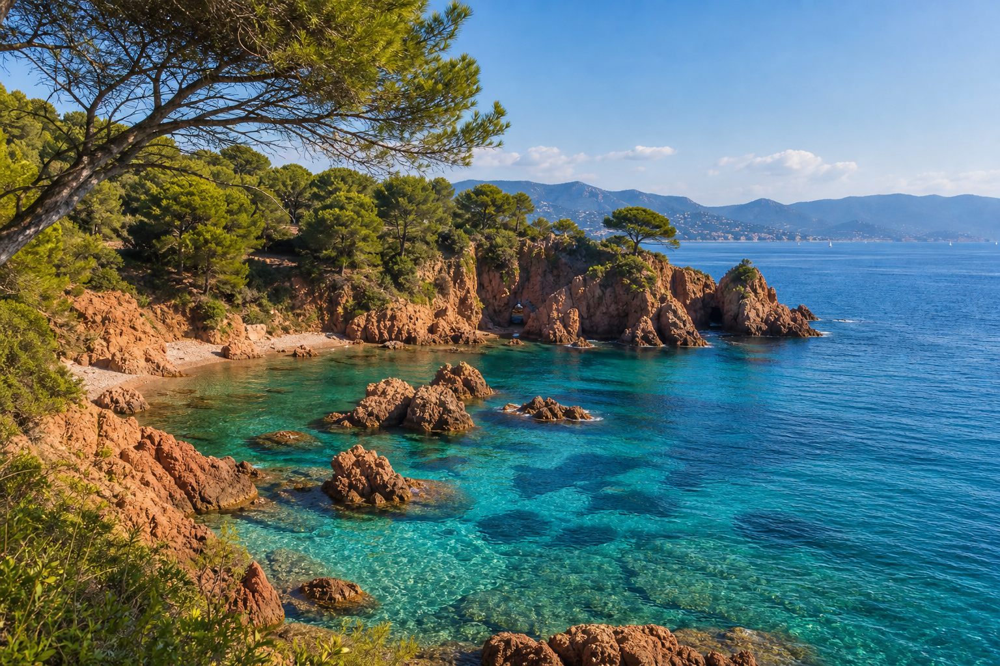

01Criques secrètes · Proche du port
Mandelieu
& ses criques
Une sortie douce et accessible pour découvrir les anses préservées autour de Mandelieu et Théoule. Idéale pour profiter rapidement de la mer sans longue navigation.